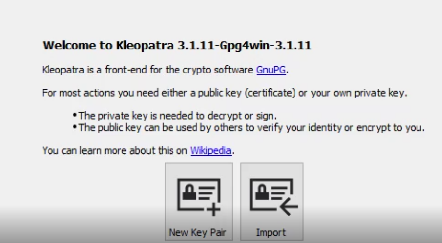
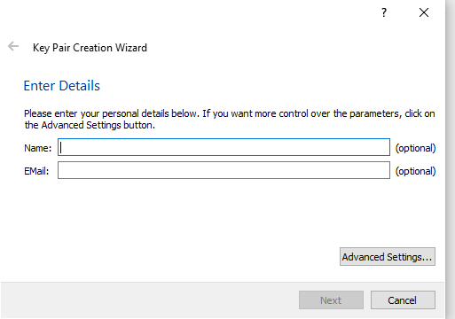
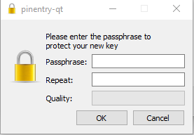
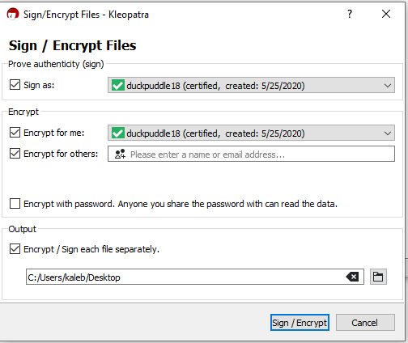
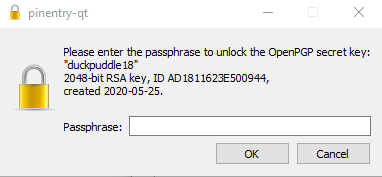
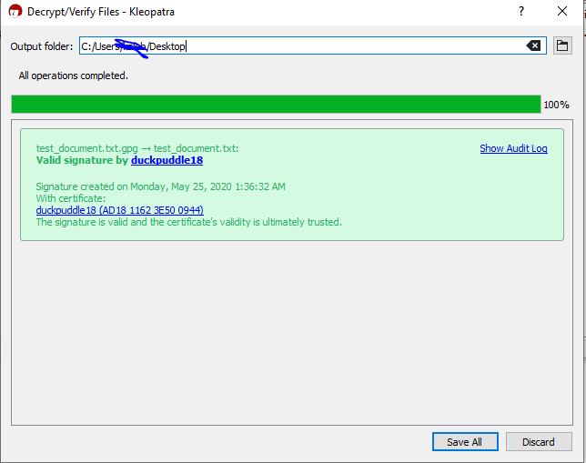

Encrypting files with gpg4win on windows
navigate to gpg4win and install gpg4win
once installed, open up Kleopatra
click new key pair

type your name and email

create a password for the encryption key and then click ok and finish

click "sign/encrypt" located on the top left
once you click "sign/encrypt" click "sign/encrypt

at the next screen, type in your encryption key password

click finish
to decrypt:
click decrypt/verify on the top left
navigate to encrypted file and double click(looks like this)

click "save all"

that is all you need to do to encrypt a file using gnupg, I hope you enjoyed my tutorial